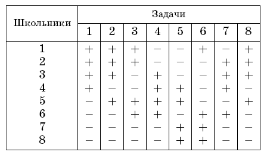

Problem ID 107802
a) Eight schoolchildren solved 8 tasks. It turned out that 5 schoolchildren solved each problem.
Prove that there are two schoolchildren, who between them solved every problem at least once.
b) If each problem is solved by 4 pupils, prove that it may turn out that there are no such two.
Solution
a) We will have a triplet of two students and a task that they all decided not to solve marked. Since each task was not solved by three students, each task corresponds to three marked triples. So, all in all there are 24 triples. On the other hand, there are 28 = $7\times8$ / 2 pairs of students. Consequently, there are a pair of students who do not belong to any one of the triples. This means that they have solved all the problems.
b) Example:

Remarks
1. Points: 3 + 3.
2. Analogous arguments allow us to prove that if among n schoolchildren each of the p problems is solved by at least n - m people and n $($n - 1$)$ $>$ pm $($m - 1$)$, then some two solved $($together$)$ all the problems, and if n $($n - 1$)$ ... $($n - k + 1$)$ $>$ pm $($m - 1$)$. .. $($m - k + 1$)$ for some k $>$ 1, then there are k schoolchildren who together solved all the problems.